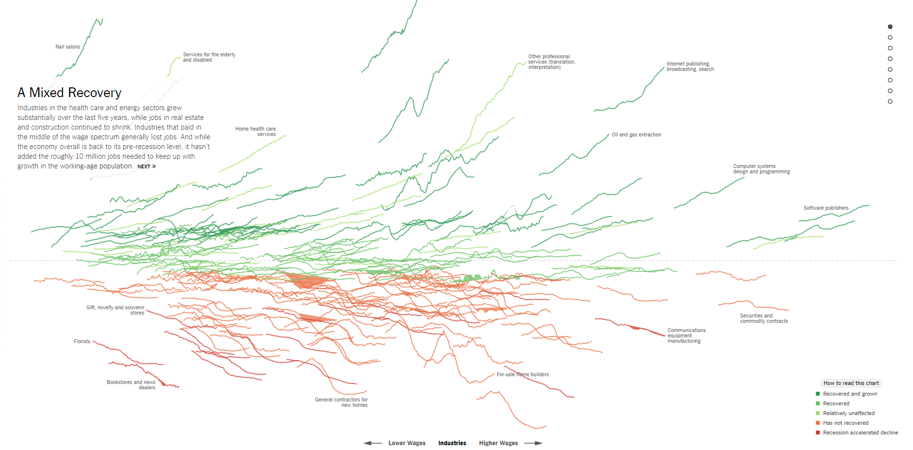
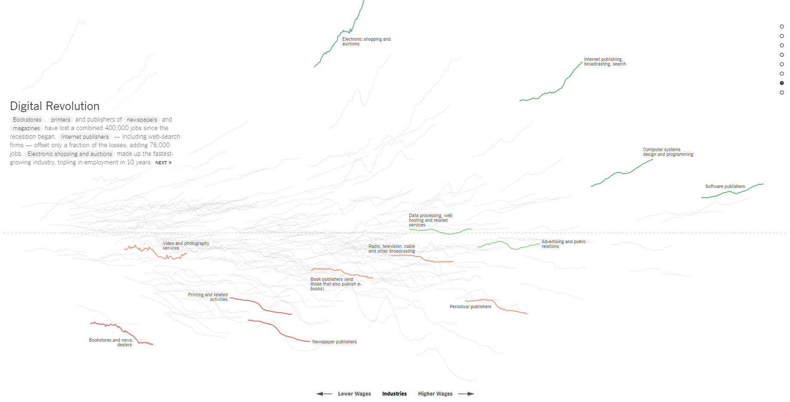
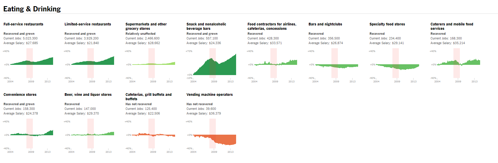
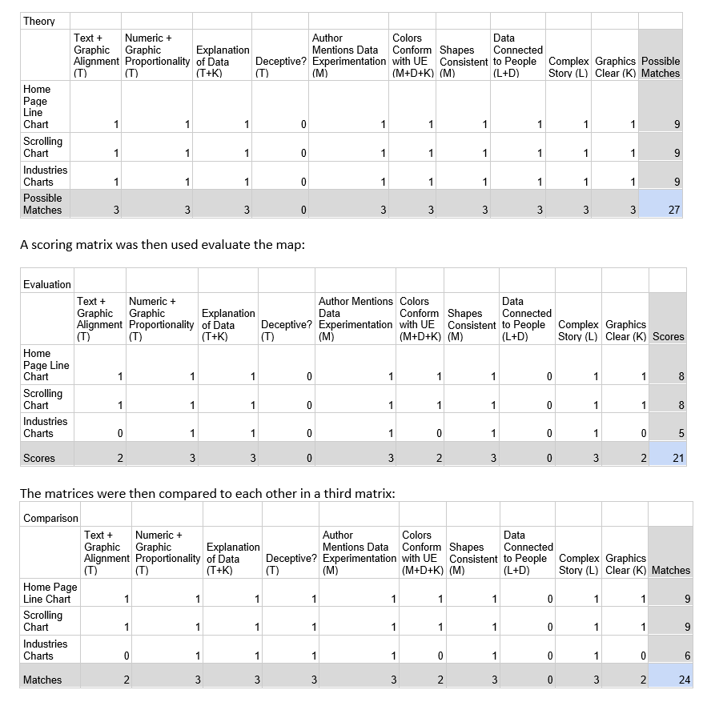
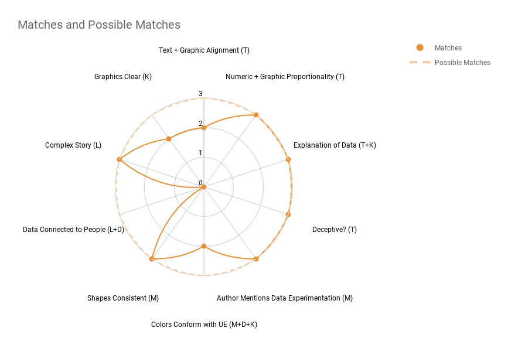

Assignment 8: Data Visualization Critique
A Critique of Data Visualization: How the Recession Reshaped the Economy, in 255 charts
  This critique will explore the charts and visualization techniques made by the NYTimes in the “The Upshot” section, on June 6, 2014. The article is by Jeremy Ashkenas and Alica Paplapiano. The charts follow the story of “How the Recession Reshaped the Economy, in 255 charts”. To explore the data behind the charts, the charts themselves, and the narrative of the article, the critiques will be broken down into 3 Sections – Description of the Charts and Data, Theory from Graphic Design and Quantitative Data Visualization Evaluation, and Conclusion. The description section will contextualize the information used by and the information disseminated from the article through data, charts, and color. The theory section will set a theoretical toolkit to analyze the information and the article, utilizing readings from the course and some from outside the course. The analysis section will use a set of comparative matrices to find areas where the theory matches the chart design found in the article. The findings section will expound on where the theory meets or does not meet the practice. Finally, in the conclusion section will investigate the impacts of the built piece as it relates to social and political functions for communication of news and media.
Description of the Data and Charts
The data that the authors of the article investigated were salary and jobs numbers that were seasonally adjusted. The adjustment allows for the data to remove seasonal patterns that may obscure the traditional jobs pattern. Meaning, that seasonal events and time constraining variables like changes in weather, harvests, major holidays, and school schedules are removed to isolate the data from the noise and volatility in the labor market. The authors also adjusted the average salary data for inflation using a base of average gross salary earnings, multiplying the data with the full-time work hours equivalent to 2,080 hours. Although, they mention that all the jobs may not all be full-time, which leads into questions about the actual hours worked and number of part-time jobs in the economy. Nonetheless, the data can provide some insight into the labor market. Also, the data aggregates and averages across all levels of employment in an industry. Aggregating and averaging hierarchical data can give the analysis further space for some statistical fallacies, of which will be explained in theory section. Still, the aggregation and averaging of the salary data can provide further research for finding statistical fallacies like the Simpson’s Paradox or other ecological inference fallacies. As far as the temporal aspect, the data is consistent using years from 2004 to 2014. It is vital to understand how data is produced because data is an important (if not the most important) component in communication of information. For this paper, the form of communication is given through charts and written word. The charts follow an analysis of jobs data in the United States, using graphics to make sense of the vast information provided by the Bureau of Labor Statistics. Although there are 255 charts in the piece, there are only two types of charts used by the authors. The first is a line chart with multiple categorical variables indicating the various worker industries in the country, and it is given to the reader as soon as she enters the webpage. The second type of chart (the other 254 charts) is a time-series chart (Year in the X-axis) indicating the percentage change of workers employed in the industry (Percentage Change in the Y-axis). The chart is interactive, and it allows the user to follow an industry across time through job change estimates. The charts display the current number of jobs in the industry by default, allowing the user to interact and explore the job numbers and salary across time (from 2004 to 2014) by moving the mouse across the chart. The charts also display the author’s determination of whether an industry is considered “Recession accelerated decline”, “Has not recovered”, “Relatively Unaffected”, “Recovered”, or “Recovered and grown” as of June 6, 2014. Recovery was measured for those industries with employment within 6 percent of their pre-recession peak, and “Recovered and grown” for those that with employment higher than the 6 percent threshold. All other industries were considered “not recovered”. Except, if the industry has fallen within 2 percent before the recession (2003) and continued to fall within 3 percent after the recession, where they are considered industries with “Recession accelerated decline” (Parlapiano 2014).
Theoretical Toolkit
This section will give a brief explanation of the literature that will help to deconstruct the data visualization techniques and limitations. Edward Tufte’s The Visual Display of Quantitative Information mentions that data visualization maybe me manipulated to influence the reader’s interpretation of the displayed information. That is, he shows two charts that keep their means relatively the same, yet, the one chart is erratic and linear in nature. The second chart increases to a point and then continues to curve down, that is, it is a downward facing parabola. The message from Tufte is that data visualization is not inherently objective, such that, its creation is analogous to drawing. Boris Müller reinforces this notion of bias in the creation of data visualization, but also considers how “data is capta,” (Müller 2017). That is, the data that is captured maybe culturally or perceptively biased. A good case to consider would be an example with two people, one color-blind and one not color-blind, distinguishing between the occurrence of red, blue, and black as they appear to fill in an ellipse on the screen. The color-blind person would not be able to account for the red color, in fact, depending on their perception, they may see a grey color. Both Tufte and Müller consider the bias in the production of both data and its visualization.Giorgia Lupi considers leaning towards “Data Humanism,” that is, moving away from abstractions of numbers as events or future projection. Lupi embraces the bias of data and considers what the bias can tell us about improving how we create, interpret, and visualize data by “connecting numbers to what they really stand for: knowledge, behaviors, people,” (Lupi 2017). She encourages experimenting with the complexity of the data, where the connections can tell different stories. The more complex and deep the visualization, the more people will engage with the material. Johanna Drucker also encourages the humanization of data, where the relationship through observer and experience is met through graphic design. Such that, when charts or other interpretative models are produced, the reader and the creator create a dialogue about statistical concepts. Drucker argues that data visualization creations of an interpretative language and asks the reader to consider what is being told about the data to the reader. Andy Kirk agrees with both Lupi and Drucker and provides a criterion of the construction of the process. Kirk mentions keeping the intention consistent (positive, negative, confusion, etc.), whether the audience will be able to understand how to read the graphic, whether the explanations present and intuitive with design, whether further insights be perceptible, and whether the visualization works functionally (errors, accuracy, clarity, etc.). By utilizing these theories, we can construct a matrix with the visualizations, text, and concepts given to compare where they are lacking and where they are not. Such as criterion will serve to visualize the data of where the data visualization techniques match or fall short of a philosophy of design.
Analysis and Findings
The matrix consists of the work of Tufte, Müller, Lupi, Drucker, and Kirk. That is, their literature on humanist data visualization provided categories that allow the evaluation of current data visualization work. The matrix is provided below:
 Discussion
According to the results, the maps matched most of the theory laid out by the authors. However, there for the category that detailed whether the data connected to people, was lacking in all three charts. That is, the data in the article only mentioned the numbers as they related to salary and the industry and did not mention the toll on workers. Having mentioned that the economy is not just about numbers but about people would have moved the analysis towards a humanist approach. Also, industrial graphs were not clear, that is they have a hovering rectangular figure, but they did not have a label or figure that lets the map user know what the shapes represent. Another limitation was that some of the industry graphs had negative percentages but were still considered “Recovered” as they were less negative than they were before. It was hard to grasp, especially given the green color. The graphs did represent some good aspects, as in a thorough explanation of the data, the mention of the data manipulation to structure the data for the analysis, and the numeric increases in data matched the growth and declines for all three charts.
Conclusion
Overall, the charts were informational and displayed lots of information for the reader to get a large part of the story. However, according to the data humanists the charts lacked the people aspect of the data.